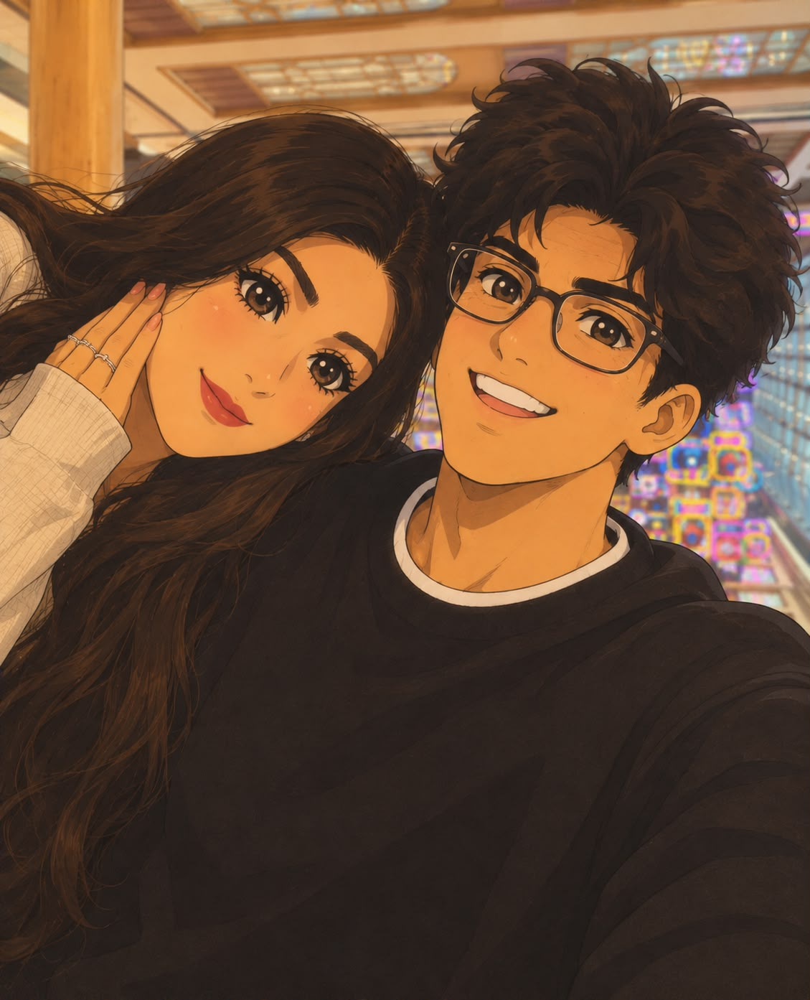
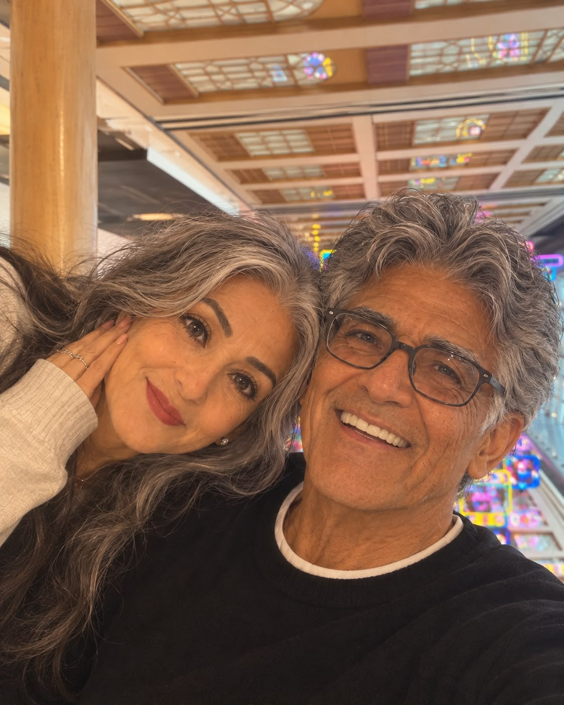

![Handwritten letter: Happy anniversary my Aru baby! Hi my beautiful wife, I know you want me to write a letter and nothing materialistic this time, so here it is. Baby, it's already been 5 months since we met and every day since then I have grown to love you even more. You make me so happy baby, and I know the distance is hard, but you're all I want forever jaan. I'm so obsessed with you. You're the cutest, most beautiful, lovely, pyaari biwi ever and I'm so grateful to be with you. I love you my Aru baby! Aapka Udu](letter.jpg)
See written in red for my biwi ❤️❤️
video
goes here
goes here
(turn it over)


time to reveal when I'll come jaanuuu ❤️❤️
pick a day and I'll tell you if you're hot or cold
see you in
days
hours
minutes
seconds